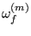
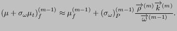
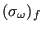
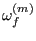
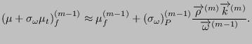
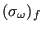

During the mesh refinement no middle nodes are considered. Consequently, edges
only contain two nodes. They are numbered according to their storage in field
iedg(1..3,*) (Figure 181). In this field entry iedg(1,i) contains the
first node of edge i and iedg(2,i) contains the second node, such that
iedg(1,i)  iedg(2,i). For a node j ipoed(j) points to an edge in field
iedg for which j is the smallest node number. If there is more than one such
edge iedg(3,i) points to the next entry in iedg containing an edge for which j
is again the smallest node number. If no more such edge exists the value of
iedg(3,..)=0. This is a construct similar to field ieln. An actual free entry
in field iedg is pointed to by ifreeed, and for any free line k iedg(3,k)
points to a next free line.
iedg(2,i). For a node j ipoed(j) points to an edge in field
iedg for which j is the smallest node number. If there is more than one such
edge iedg(3,i) points to the next entry in iedg containing an edge for which j
is again the smallest node number. If no more such edge exists the value of
iedg(3,..)=0. This is a construct similar to field ieln. An actual free entry
in field iedg is pointed to by ifreeed, and for any free line k iedg(3,k)
points to a next free line.
Fields containing a similar number of lines as iedg are d(*) containing the length of the edges, n(*) containing the number of new nodes to be inserted on the edge for the mesh refinement (can only take the value 0 or 1 in each iteration depending on whether a node is to be inserted), r(*) containing the bias for the node insertion (if any) and iedgmid(*) containing the number of the midnode on the edge. The latter field is only introduced at the end of the mesh refinement (in projectnodes.f) and only if quadratic tetrahedral elements are requested. Finally, there is the field iexternedg(*) which takes the value:
 0 if the edge is external and part of an external edge i of the
unrefined mesh. This edge i is described by its nodes ,  (middle
node, if any, else 0) and 
which are stored in field iedgext(1..3,i). Field iedgext is a static field
(i.e. it does not change during refinement) since it describes the unrefined
mesh. Entries iedgeextfa(1..2,i) are the two external faces to which
external edge i belongs. Data on these external faces,
e.g. j=iedgeextfa(1,i) is stored in ifacext(1..6,j) and
ifacexted(1..3,j). These fields are discussed in the face field
section. Finally, isharp(i) indicates whether an external edge is
sharp. Whether an external edge is sharp is decided on at the end of the
refinement at the time of the node projection. An external edge is sharp if
0 if the edge is external and part of an external edge i of the
unrefined mesh. This edge i is described by its nodes ,  (middle
node, if any, else 0) and 
which are stored in field iedgext(1..3,i). Field iedgext is a static field
(i.e. it does not change during refinement) since it describes the unrefined
mesh. Entries iedgeextfa(1..2,i) are the two external faces to which
external edge i belongs. Data on these external faces,
e.g. j=iedgeextfa(1,i) is stored in ifacext(1..6,j) and
ifacexted(1..3,j). These fields are discussed in the face field
section. Finally, isharp(i) indicates whether an external edge is
sharp. Whether an external edge is sharp is decided on at the end of the
refinement at the time of the node projection. An external edge is sharp if
The last fields ipoeled(i) and ieled(2,*) point to the elements to which edge i belongs in the same way the element per node relationship is stored in ipoeln(*) and ieln(2,*), Figure 182.